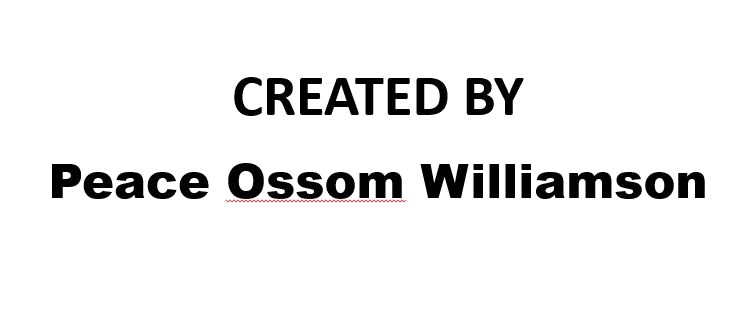

Jay Z
Impact of
his top
producers and samples
View interactive displays next.

Sales
Which producer has the greatest impact on album sales?
Samples
Contact
Peace Ossom Williamson -
peace@uta.edu
·
@123POW
All content developed, including source code for the visualizations, are available CC-BY-SA from
http://github.com/pow123/jayzproducers.git
Images
Jay Z Sky - 1920x1080hdwallpapers.com
Jay Z, Kanye in concert - User: U2soul at Wikimedia Commons
Jay Z, alone in concert - User: U2soul at Wikimedia Commons